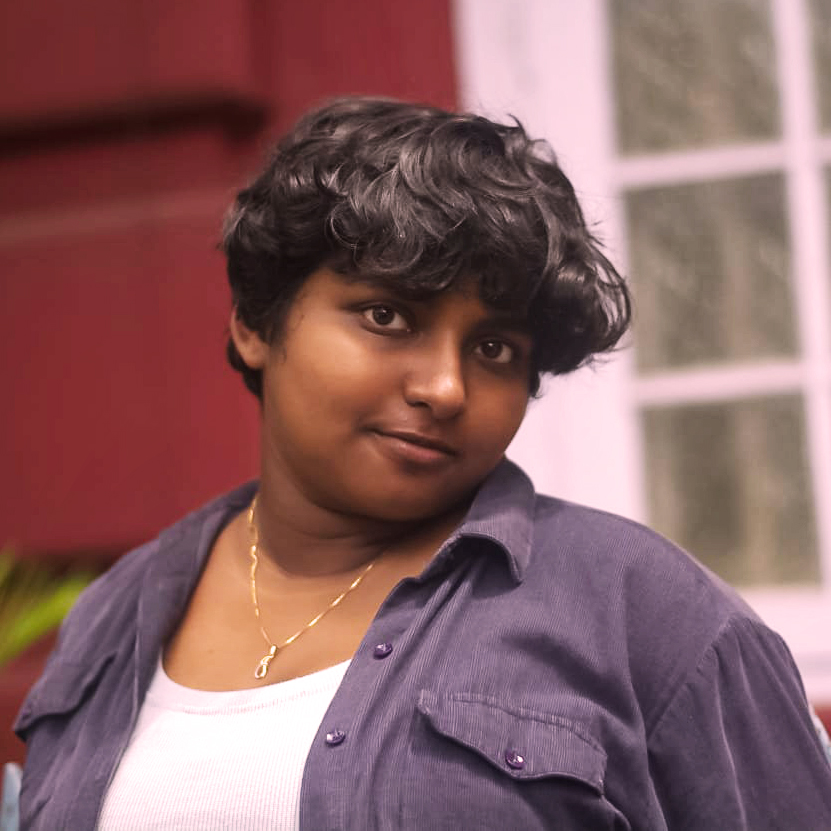

I am currently in my 6th semester at NID AP, specializing in Textile Design. My practice is rooted in material honesty—from documenting the missionary-influenced Narasapur lace craft to experimenting with Tussar silk constructions.
B.Des Textile Design, NID Andhra Pradesh (2023 - 2027)
Weaving (Basic & Advanced), Surface Design (Jaal/Bel/Buta), Draping, Patternmaking, Adobe Creative Suite, Krita Animation.